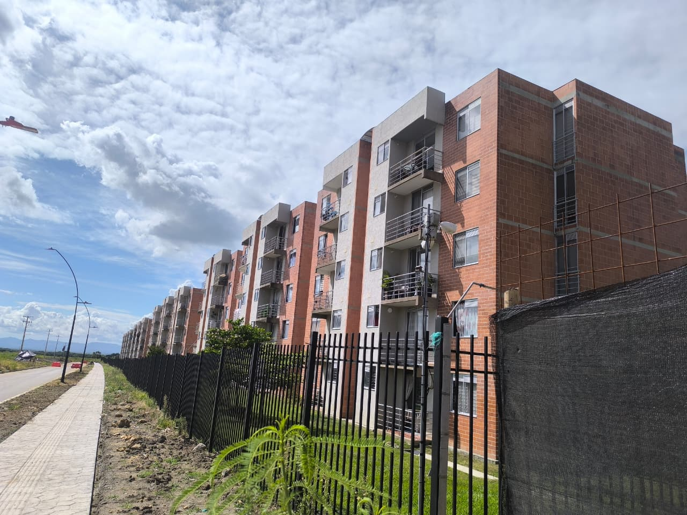
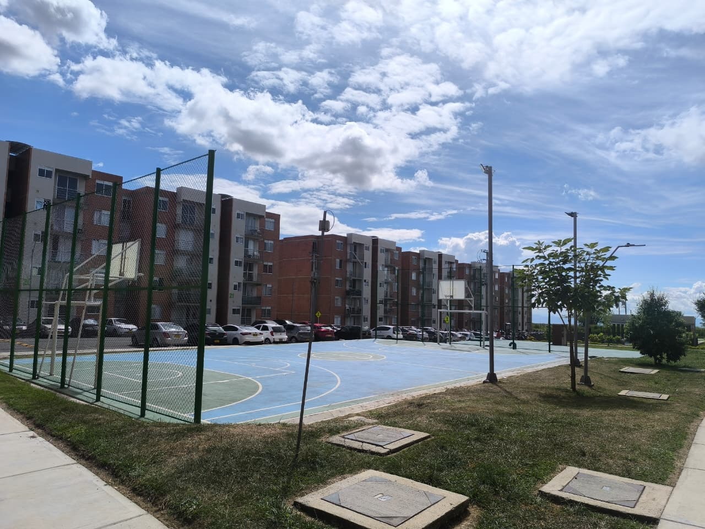

Espacio institucional orientado a fortalecer la comunicación, participación responsable y trazabilidad documental de las actuaciones administrativas y comunitarias de CIMARA PH.
La administración transitoria y los órganos institucionales activos continúan adelantando procesos de estabilización administrativa, recuperación documental y fortalecimiento comunitario, priorizando siempre el bienestar colectivo, la legalidad y la protección patrimonial de la copropiedad.
Con el fin de garantizar organización, trazabilidad y adecuada gestión documental, se recomienda utilizar exclusivamente los canales institucionales habilitados.
Canal oficial para solicitudes administrativas, comunicaciones institucionales, recepción documental y requerimientos generales.
Espacio de comunicación rápida para información institucional general, orientación básica y socialización de comunicados oficiales.
Actualmente los canales institucionales se encuentran en proceso de reorganización operativa y fortalecimiento documental derivado del proceso de estabilización administrativa de la copropiedad.
Atención administrativa institucional
Gestión documental organizada
Información institucional verificable
Participación responsable y colaborativa
Todas las actuaciones administrativas, financieras, documentales y operativas adelantadas actualmente buscan fortalecer la estabilidad institucional, la transparencia de la gestión y la construcción colectiva de soluciones sostenibles para el futuro de la copropiedad.

Conjunto residencial orientado al fortalecimiento comunitario, recuperación institucional y mejora progresiva de la calidad de vida de la comunidad.
Cll 117 # 18 - 64 sur
Ibagué - Tolima
Colombia
Conjunto Cerrado CIMARA PH
Portal institucional orientado a la transparencia y fortalecimiento documental.